Sacramento Travel Guide
Urban center situated at the confluence of two major rivers, serving as a political, cultural, and economic hub with deep historical roots and a diverse metropolitan population.
Places to See in Sacramento
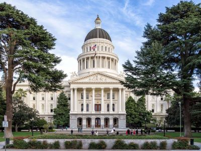
Andre m, CC BY-SA 3.0, via Wikimedia Commons; Image Size Adjusted

California State Capitol
Neoclassical government complex featuring legislative chambers, historic exhibits, and public tours that explore the political and architectural legacy of the state.
Always dreamin, CC BY-SA 4.0, via Wikimedia Commons; Image Size Adjusted

California State Railroad Museum
Premier railroad museum featuring historic locomotives, restored railcars, and immersive exhibits that showcase the impact of rail transportation on California and the American West.
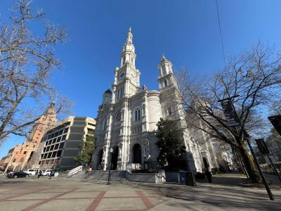
Antony-22, CC BY-SA 4.0, via Wikimedia Commons; Image Size Adjusted

Cathedral of the Blessed Sacrament
Historic Roman Catholic cathedral known for its ornate interior, daily Mass services, and role as the mother church of the Diocese.
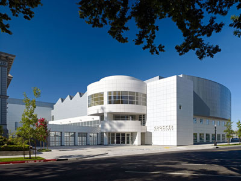
Crockerart, CC BY-SA 3.0, via Wikimedia Commons; Image Size Adjusted

Crocker Art Museum
Three-story museum featuring California art from the Gold Rush to the present, international ceramics, and rotating exhibitions in a blend of historic and contemporary architecture.
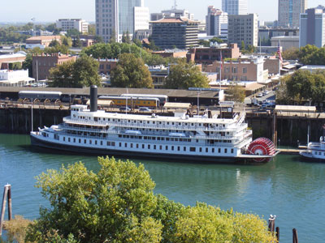
J.smith, CC BY-SA 3.0, via Wikimedia Commons; Image Size Adjusted

Delta King
285-foot-long sternwheel steamboat that entered service in 1927 and today serves as a hotel, restaurant and venue
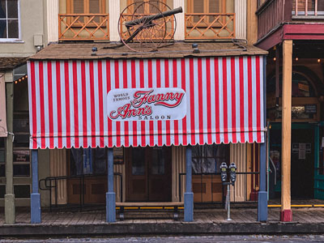
Marinainusa, CC BY-SA 4.0, via Wikimedia Commons; Image Size Adjusted

Fanny Anns
Multi-level saloon serving gourmet burgers, craft beer, and nostalgic Americana decor in a lively, historic setting.
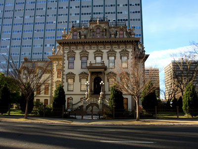
TravelingOtter, CC BY-SA 2.0, via Wikimedia Commons; Image Size Adjusted
.jpg){kind=link}
Leland Stanford Mansion State Historic Park
Restored Victorian mansion offering guided tours, historic exhibits, and formal reception rooms used for official state functions.
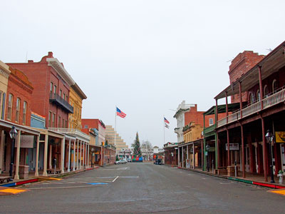
Steve Rouhotas, CC BY-SA 3.0, via Wikimedia Commons; Image Size Adjusted
_Wiki.jpg){kind=link}
Old Sacramento State Historic Park
Historic district preserving Gold Rush-era buildings, museums, and landmarks that reflect California’s early commercial and transportation history.
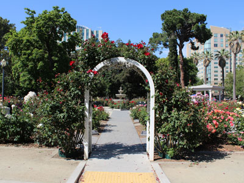
Sarbjit Bahga, CC BY-SA 4.0, via Wikimedia Commons; Image Size Adjusted

State Capitol Park World Peace Rose Garden
Victorian-style public garden featuring over 650 rose bushes in more than 140 varieties, designed to inspire peace and reflection through floral beauty and engraved messages.
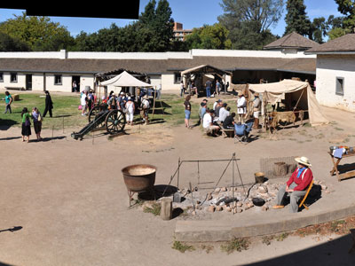
Mark Urquhart, CC BY-SA 3.0, via Wikimedia Commons; Image Size Adjusted

Sutters Fort State Historic Park
Historic adobe fort offering exhibits, living history programs, and self-guided tours that explore early California settlement and trade.
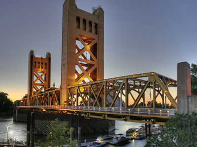
Michael Grindstaff of Sacramento, CA, edited by Fir0002, Public domain, via Wikimedia Commons; Image Size Adjusted

Tower Bridge
Iconic vertical-lift bridge spanning the Sacramento River, known for its golden paint, Art Deco design, and pedestrian walkways connecting downtown and West Sacramento.
Overview
Sacramento is the capital of California, a river city of about 525,000 residents at the confluence of the Sacramento and American Rivers in the Central Valley, with more than two million people in its metro area. It is known for the State Capitol and its park, the Gold Rush-era waterfront of Old Sacramento, tree-lined neighborhoods, farm-to-fork dining and easy access to the Sierra Nevada, Lake Tahoe and the Delta.
Visitors come to Sacramento for its history and museums, its government sites, its restaurants and breweries, and its outdoor recreation along the rivers. The city calls itself the "Farm-to-Fork Capital" because it is surrounded by farmland, and it is a convenient base for visiting Napa and Sonoma, San Francisco and Gold Country.
History
The Nisenan and Maidu lived here before Swiss-born John Sutter built Sutter's Fort in 1839. The 1848 gold discovery at Coloma turned Sacramento into a booming supply and transportation hub, and the city incorporated in 1850. It became the state capital in 1854, was the western terminus of the Transcontinental Railroad and the Pony Express, and survived repeated floods by raising its downtown streets.
Sightseeing and Popular Landmarks
The California State Capitol and Capitol Park, Old Sacramento, the Tower Bridge and the riverboat Delta King are the main sights. The Leland Stanford Mansion, the Cathedral of the Blessed Sacrament and Sutter's Fort are other landmarks.
Culture and Museums
The California State Railroad Museum is one of the largest railroad museums in North America, and the Crocker Art Museum, founded in 1885, is the oldest art museum in the West. The California Museum, the Sacramento History Museum and the Golden 1 Center's concerts add to the offerings, and the Sacramento Jazz Jubilee and the California State Fair are major events.
Parks
The American River Parkway runs for 32 miles along the river, with trails for biking, walking and rafting, and Capitol Park is a 40-acre garden around the Capitol. William Land Park has the Sacramento Zoo and Fairytale Town, and Sutter's Landing Park, Discovery Park and the Sacramento River Delta offer paddling and picnics.
Sports
Sacramento has several professional teams: the Sacramento Kings of the NBA play at Golden 1 Center downtown, the Athletics of MLB have played at Sutter Health Park in West Sacramento since 2025, home of the Sacramento River Cats (Triple-A), and Sacramento Republic FC (USL Championship) is a popular soccer club. Sacramento State and UC Davis are nearby college teams.
Seasons and Weather
Sacramento has hot, dry summers, with highs often in the 90s and above 100°F, cooled in the evenings by the Delta breeze, and mild, wetter winters with highs in the 50s and about 18 inches of rain. Dense tule fog is common in winter mornings, and spring and fall are the most comfortable seasons.
This article uses material from Wikipedia as well as information from official tourism and institutional sources. Key references include Visit Sacramento, City of Sacramento, Old Sacramento State Historic Park, Crocker Art Museum, and National Weather Service Sacramento. Wikipedia material is from the article "Sacramento, California", released under the Creative Commons Attribution-Share-Alike License 3.0.


-1000.jpg)
.jpg){kind=link}
-1000.jpg)
.jpg){kind=link}
-1000.jpg)
.jpg){kind=link}
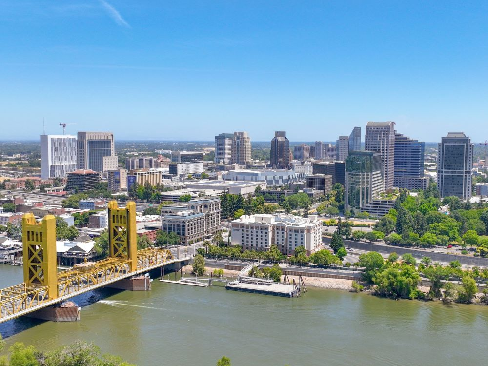